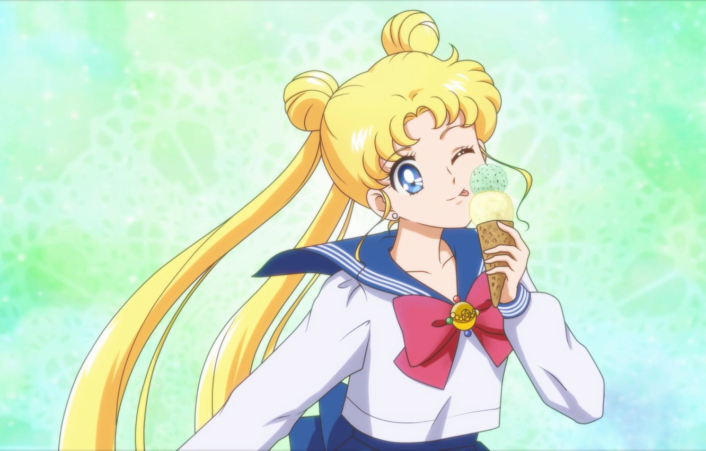

About Sailor Moon
Usagi Tsukino (月野 うさぎ, Tsukino Usagi, renamed "Serena Tsukino" or "Bunny Tsukino" in some foreign adaptations), better known as Sailor Moon (セーラームーン, Sērā Mūn), is a fictional superheroine who is the main protagonist and title character of the Sailor Moon manga series written by Naoko Takeuchi. She is introduced in chapter #1, "Usagi – Sailor Moon" (originally published in Japan's Nakayoshi magazine on December 28, 1991), as a carefree schoolgirl who can transform into Sailor Moon. Initially believing herself to be an ordinary girl, she is later revealed to be the reincarnated form of the Princess of the Moon Kingdom, and she subsequently discovers her original name, Princess Serenity (プリンセス・セレニティ, Purinsesu Sereniti).
Sailor Moon in civil form
Her Most Favourite Foods
- Ice Cream
- Sweet Dango
- Cake
The Sailor Senshi
Sailor Senshi are the Sailor guardians of the Solar System. All have civilian identities and protect Earth from those who threaten peace. Click on the links below to read more about them: